<< Предыдущая часть - Романтизм ХIХ в.
- Классический гений исчерпал себя, как и все прочие традиции.
- Он обогатил царство воображения всеми идеями и чувствами,
- какими должен был обогатить.
- Миссия его выполнена.
- П. С. Балланш
Завершим наш обзор эволюции стилей в искусстве Европы краткой характеристикой стиля реализма.
Реализмом принято называть изображение видимой действительности такой, какой она явлена нашему зрению, без существенных искажений или домыслов. Элементы реализма присутствовали в изобразительном искусстве всех времён, начиная от каменного века. Каждая региональная культура вносила свои особенности в изображения, казалось бы, одинаковых объектов – например, человека, горы или дерева. Поэтому реализм – это скорее проблема, чем стиль. Говоря о нём, приходится многое упрощать.
Во второй половине ХIX в., в результате существенных изменений в общественно-политической жизни европейских государств от искусства потребовалось правдивое и неискажённое отображение действительности. Промышленная революция вызвала ряд изменений также и в отношениях между людьми, в повседневном быту, во взаимодействии человека с природой. Естественно, при этом изменились задачи искусства.
Задачей реализма стало изображение жизни такой, как она есть. В живописи художников-реалистов нашли своё место образы трудящихся, трактованные сочувственно, а также критика эксплоататоров простого народа. Европейская литература этого времени – критический реализм – беспощадно обличает нравы буржуазии и дворянства стран Европы (Бальзак, Мопассан, Стендаль, Золя, Флобер, Толстой, Тургенев, Гоголь, Чехов, Некрасов...)
Реалистическое направление в живописи стран западной Европы не оставалось в стороне от общих проблем культуры. Особенно успешно работали в этом стиле французские художники Г. Курбе, Ж.-Ф. Милле, Ж.-Б.-К. Коро, О. Домье.
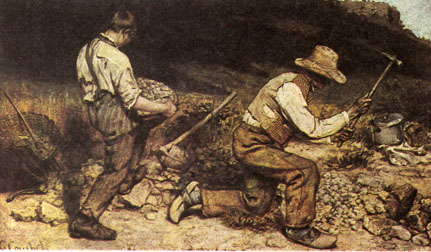
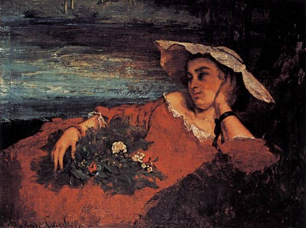
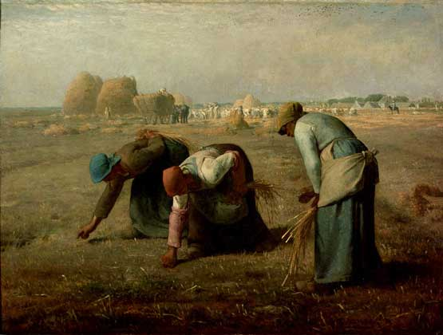
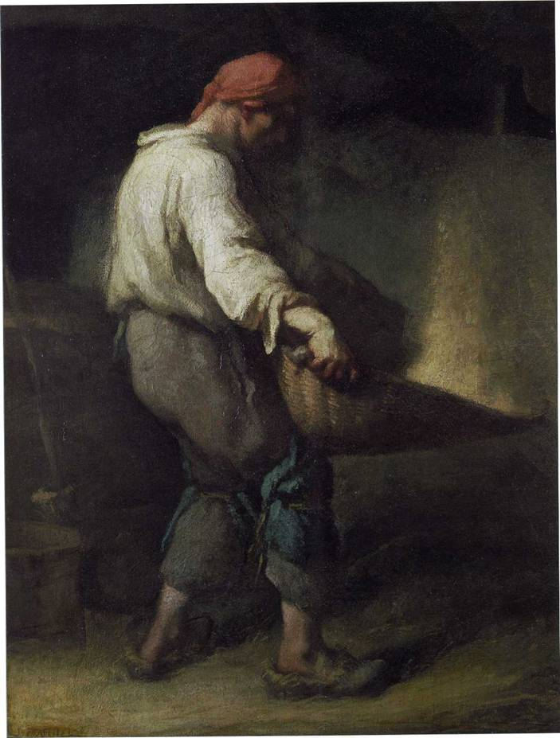
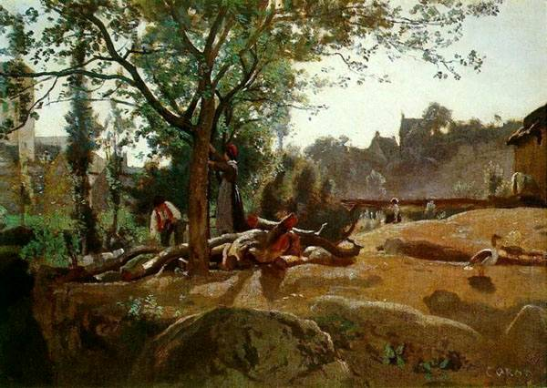
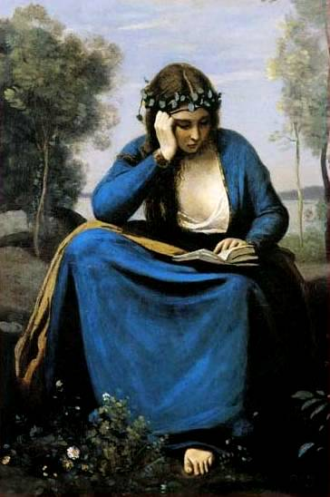
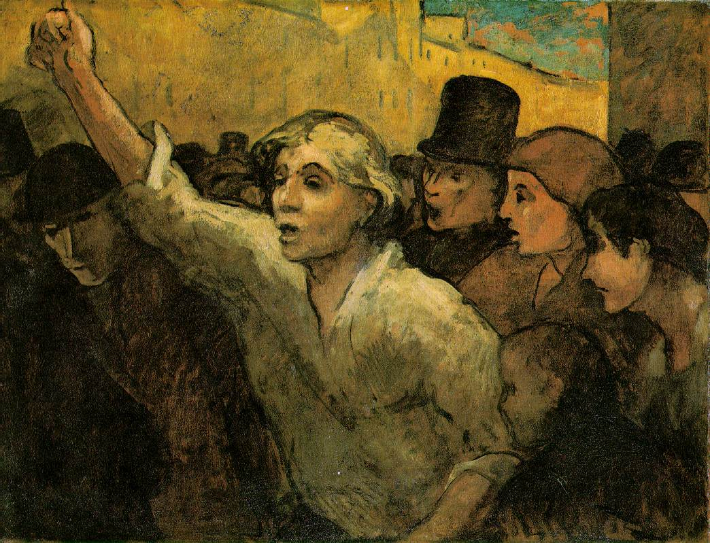
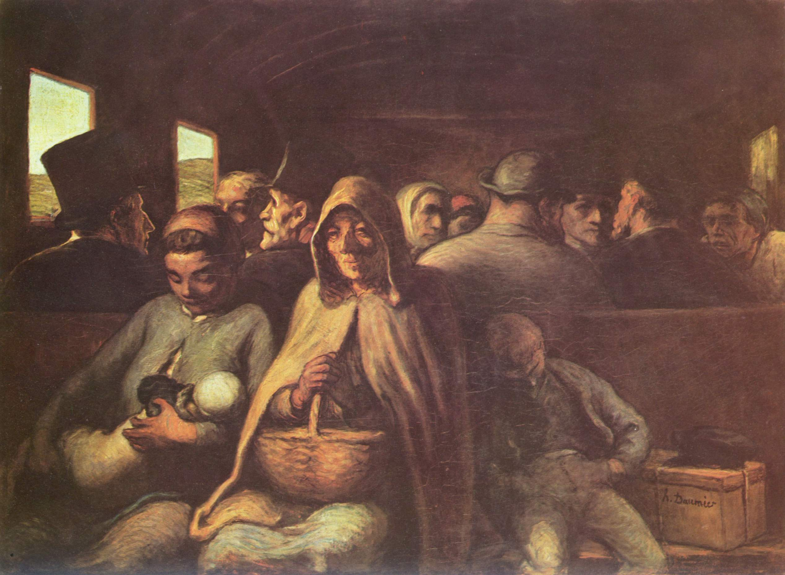
На нашей «синусоиде стилей» реализм должен, несомненно, занять место в ряду классических стилей, то есть основанных на принципах разума, гуманизма (в лучшем смысле этого слова), природосообразности (верности формам природы). Реализм не фантазирует, не мечтает, не преувеличивает и не преуменьшает; художник – реалист не может быть равнодушен к порокам общества и проблемам тружеников. Он, по определению, патриот.
По всем этим признакам русские художники-реалисты ХIX века заняли первое место в искусстве Европы. Имена их известны всем культурным людям: И.Е. Репин, В.И. Суриков, И.И. Левитан, В.А. Серов, В.Д. Поленов, И.С. Остроухов, И.И. Шишкин, И.Н. Крамской
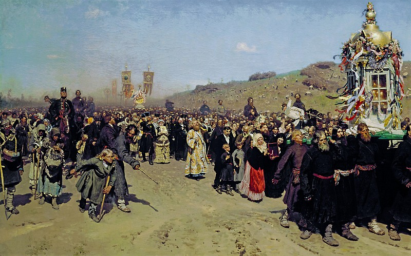
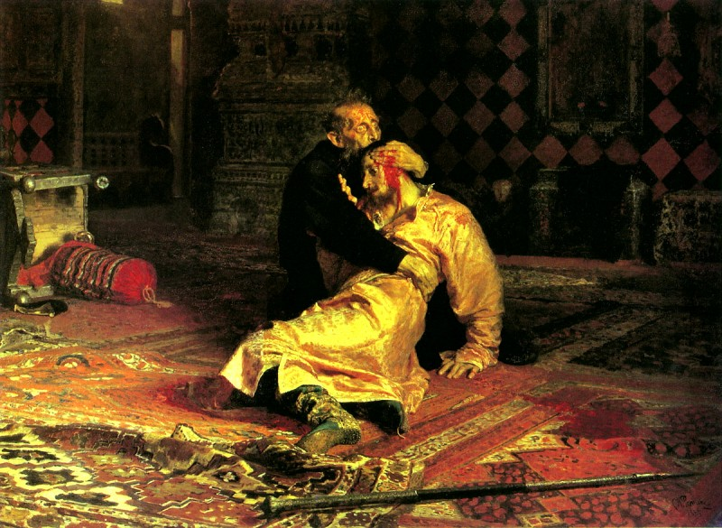
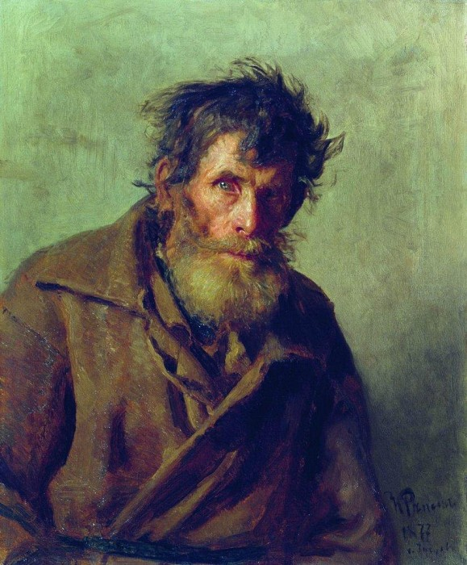
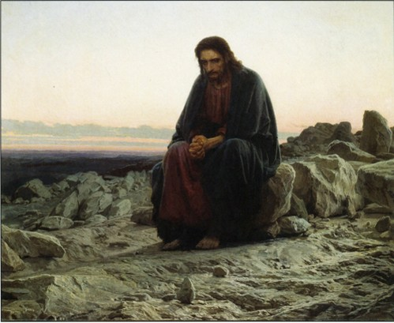
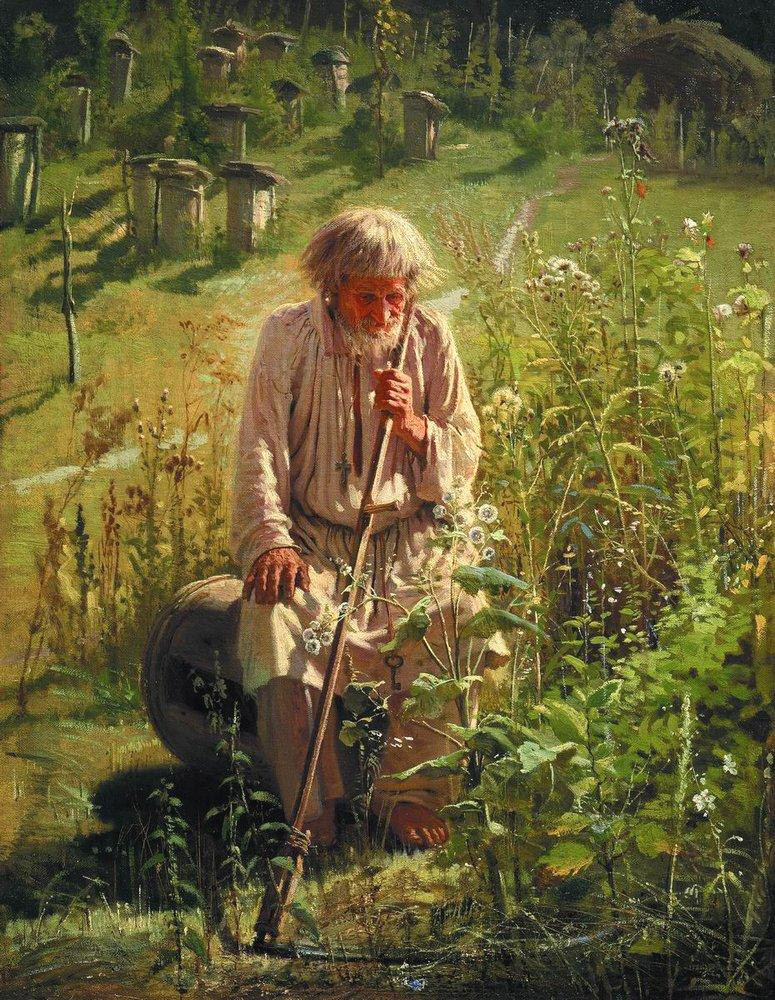
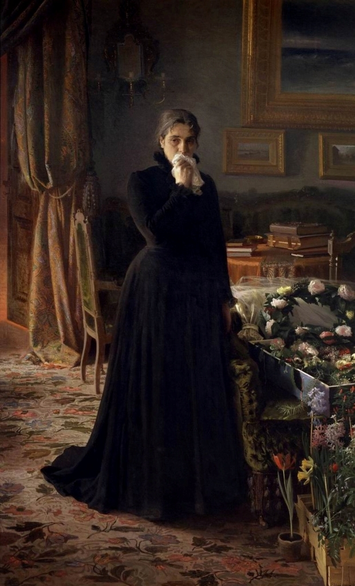
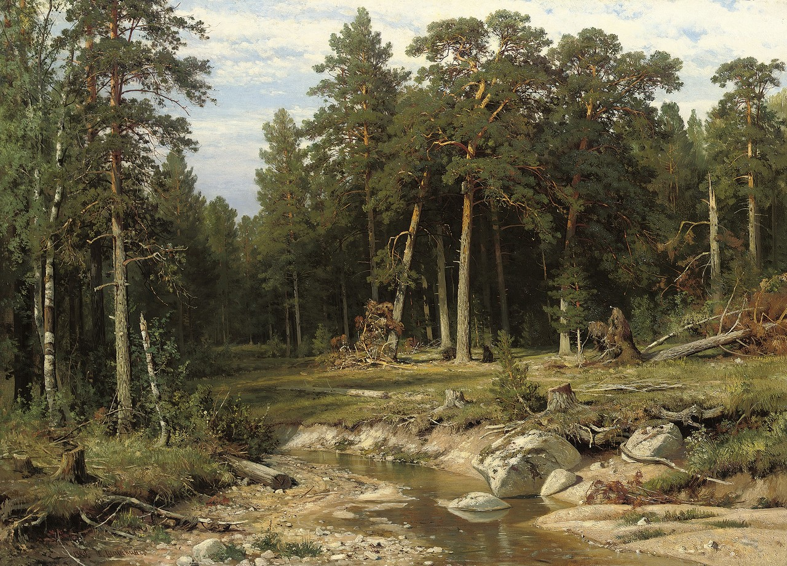
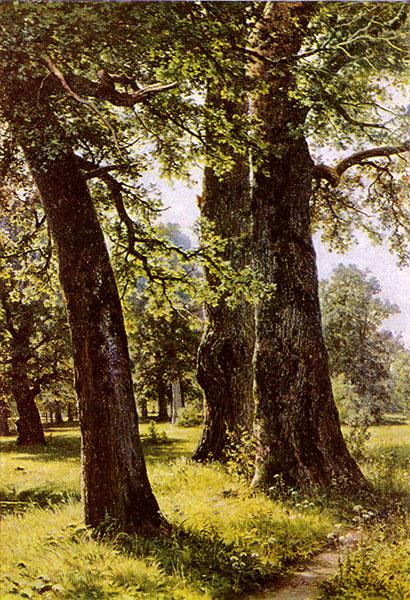
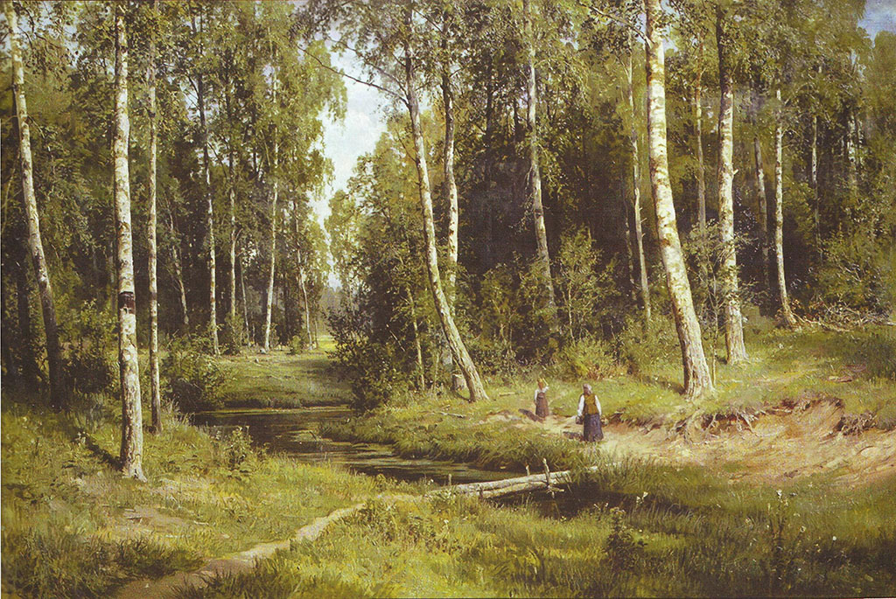
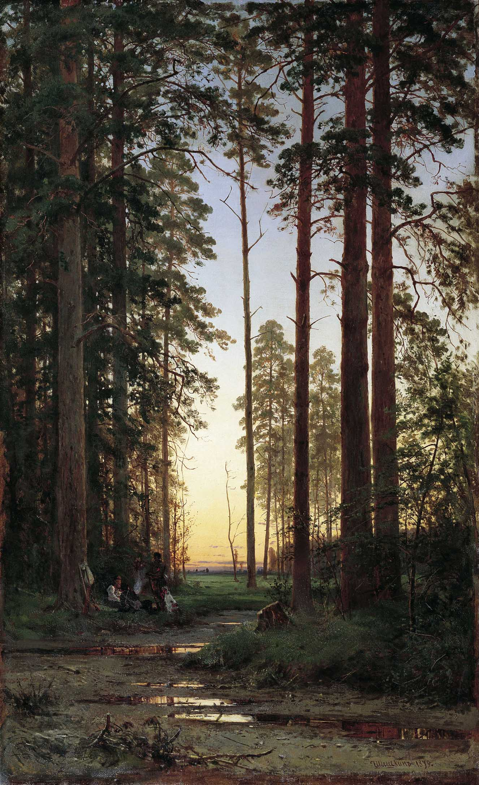
Русские художники были хорошо знакомы с искусством Западной Европы. В ХVIII веке они следовали традициям европейского классицизма и романтизма (в силу исторических причин). Теперь же, во второй половине и последних десятилетиях ХIX века, национальное самосознание и мастерство русских живописцев выросло настолько, что западное искусство перестало быть для них образцом. Лучшие мастера кисти встали на путь реалистического искусства. Об этом красноречиво свидетельствуют письма русских художников своим друзьям и коллегам, написанные под впечатлением осмотра выставок работ французских и др. художников.
Из письма И.Е. Репина В.Д. Поленову 17 июля 1883 г.
"...Искусство парижское опустилось. Слишком много развелось поддельных художников, искусственно воспитанных, т.е. ремесленников в искусстве…Стали дрессироваться под виртуозность и недоконченность! ..."
Ну, можешь себе вообразить, если сие не основано глубоким изучением натуры и если оно есть только шарлатанство! Таков весь салон в этом году, за немногими исключениями». [Л. 42, с. 49]
В письме к Н.И. Мурашко (того же года) Репин формулирует своё credo:
«Всеми своими ничтожными силёнками (!!) я стремлюсь олицетворить мои идеи в правде; окружающая жизнь меня слишком волнует, не даёт покоя, сама просится на холст; действительность слишком возмутительна, чтобы со спокойной совестью вышивать узоры – предоставьте это благовоспитанным барышням» [Л. 42, с. 51].
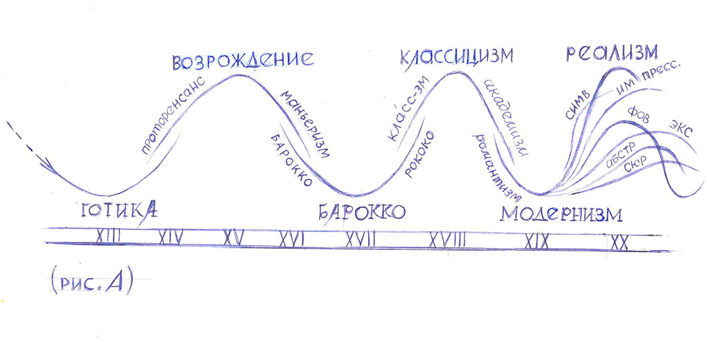
Как видим, эволюция стилей в искусстве стран Западной Европы с достаточной долей приближения следовала схеме синусоиды (рис.А) вплоть до конца ХIX – начала ХХ века. Затем , выражаясь метафорически, шнур, изображающий синусоиду, начал катастрофически распадаться на отдельные волокна, то есть новые направления, которые нарождались и развивались независимо друг от друга. Наиболее значительные из них – модерн (сецессия, югендстиль, ар нуво), импрессионизм, постимпрессионизм, фовизм, футуризм, экспрессионизм, символизм, метафизическая живопись, супрематизм, геометрический абстракционизм…и, кроме того, различные группировки типа наби или «Ослиный хвост». Общее название всех этих направлений – модернизм. Они достаточно подробно рассмотрены в литературе на разных языках и продолжают быть предметом обсуждения в наше время. Некоторые из этих направлений имели место в истории белорусского искусства.
Л. Миронова, 09.01.2017